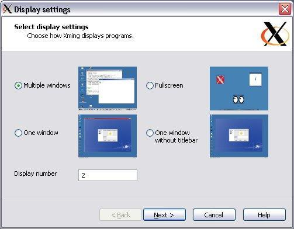
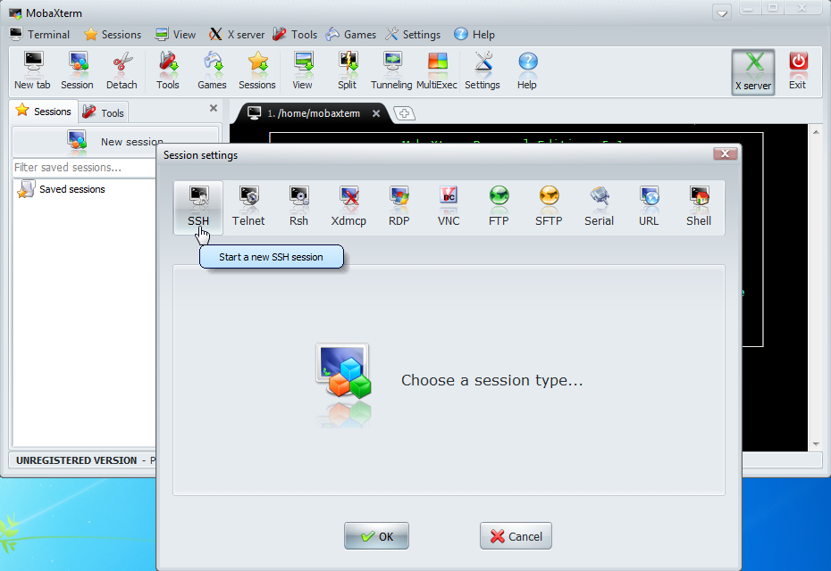

Created 星期四 30 五月 2013
@x11 @ssh @putty @cygwin
当需要连接远程linux并运行X程序时，很多朋友首先想到的是NetSarang Xmanager, 虽然这个工具的确很好用，不过这个软件不是免费的，所以银子不多的人得另外想办法。（BTW： 有银子的还可以看看X-Win32, 甚至更老牌的eXceed或者Reflection X）
其实我一直在用的是Cygwin/X，因为Cygwin提供了几乎所有的东西，从bash到终端模拟器rxvt/mintty，有openssh客户端甚至服务器，有X server和窗口管理器WindowMaker/Openbox/Metacity/Xfwm4（后两者在第三方仓库Cygwin Ports里，甚至有ibus输入法（也在Cygwin Ports里）。不过Cygwin有几个缺点 1）Cygwin一直没有类似Debian stable那样定期发布的配套，所有软件包都在不断地更新，有时你为了加装一个软件不得不更新很多很多其它的包，甚至是不相关的包； 2）所有东西都隐藏在命令行和配置文件中，对新手相当不友好； 3）小文件很多，想搞成便携式或者想共享给别人使用就非常困难。
Xming/VCXsrv
Xming算是个不错的选择，基于X.org X server编译，体积并不大（并不包含别的东西），另外带了一个向导界面(XLaunch)。

xming wizard
但这个软件有两个小问题:
1）新版本不是免费的（虽然作者要求的是捐赠而不是购买，但不捐赠而无法下载到版本），免费下载只有一个07年的6.9版本。当然，考虑到X server的发展史，很多时候这个老版本也基本上够用
（更新:如果你需要最新版的X.org X server, 可以试试这个VcXsrv项目，跟Xming几乎是一致的，同样带有Xming的向导XLaunch）
2）它只提供了X server，而没有提供终端模拟器（putty），你只能启动一个远程的X终端模拟器(rxvt/xterm/gnome-terminal /konsole之类），但没连上之间，你怎么知道远程有什么终端模拟器可用？——当然，你可以自己下载putty然后配置X11 forwarding，但对新手这可能有点难度
（更新：Xming其实现在也提供一个叫做Xming-portablePutty的包，不过也不是免费的）
结论：比较适合老手，便携/共享场景也还凑合。
MobaXterm
MobaXterm比较适合新手和便携/共享场景。
mobaxterm screenshot
便携/共享场景
- 整个应用就一个文件（14M），里面包含了bash和众多posix小工具（其实都是busybox）、openssh、X server， 其实它是基于Cygwin打包而成，启动时自动解压到临时目录，不过启动速度还是挺快）
- 提供gcc, perl, python, svn, git, emacs, vim等20多个插件，每个插件也都是一个单一文件，携带/共享很方便（其实插件是一个zip文件, 对Cygwin比较了解的人很容易自己制作插件）
- 自动导入putty的所有会话设置
新手友好性
- 为ssh/rsh/xdmcp等提供新建会话对话框，里面对常用参数都提供了文字说明；
- 启动时自动启动X server，自动为ssh连接设置X11 forwarding；
- 左测栏提供一个sftp面版，在建立ssh连接后自动将远程目录展示再这个面版中，方便上传/下载文件；
- 为ssh tunnel提供向导界面 （Tools->MobaSSHTunnel）；
- 通过右键菜单即可放大/缩小字体，也支持设置缺省字体大小（而putty需要在选项对话框中找，并且不支持缺省大小，只能逐个修改多个会话的设置）；
功能强大
- 支持建立ssh/telnet/rsh/ftp/sftp/serial/vnc/xdmcp/rdp等多种远程会话，其中xdmcp/vnc可以用于访问远程桌面。也支持本地bash或者cmd;
- 自带了ftp/tftp/http服务器（不过免费版有时间限制）；
- 支持对终端模拟器上的文字进行查找（其实它是整屏文字拷贝出来再进行查找）
- 麻雀虽小，但还带了几个游戏、目录比较器/文本比较器、计算器、文本编辑器（支持语法高亮）、网络抓包工具等
其它一些小亮点
- 支持录制和回放键盘宏
- 支持同时往多个终端发同一命令
- 支持多终端分屏显示，支持全屏，
- 支持自定义本地的HOME目录，这样vi, git等配置可以存放在该目录
- 支持将终端上的文字复制/保存为RTF（保持原色彩，比如vim/emacs里面的语法高亮， colorgcc突出显示的错误行等等）
MobaXterm的缺点
总体还是比较满意的，只有几个小地方不太爽：
- 终端模拟器对键盘的支持度不高，最大的问题是不支持Alt键作为Meta键，导致很多程序里面会不习惯（比如vi, mc, emacs），不过用AutoHotKey可以解决；
- 终端颜色有点古怪，反正我打开vi/mc，跟在其它地方看到的颜色很不一样，并且颜色搭配不太和谐，不容易看清文字；
- 少数缺省快捷键不太合理，比如
Ctrl+F, Ctrl+S都是终端里比较常用的快捷键，不过可以在对话框里面修改； - 没有man这个工具，实际上
/bin里面倒是有个man，但内容是mobaxterm自己写的一段shell脚本，只能显示nroff格式化之后的帮助文件（基本上可直接阅读的纯文本文件），而不能支持原始的man page（它自己提供的插件里面都是转化后的文档），比如man git-log可以显示帮助，而git log --help就什么也没有了——当然，也可以自己从cygwin里面将man, groff, less这几个包抽出来作一个插件来解决；
参考资料:
{kind=link}
{kind=link}
{kind=link}